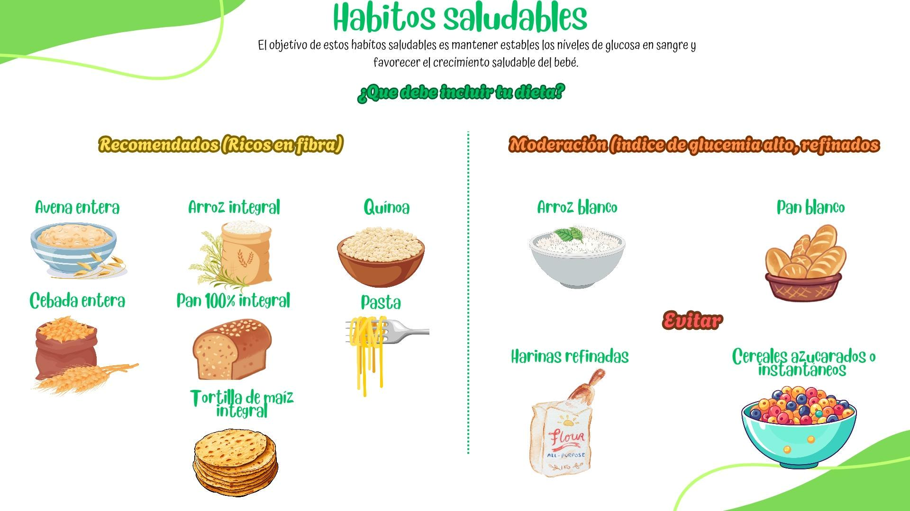

Alimentación saludable para controlar la diabetes gestacional
Importancia de la alimentación
Una alimentación adecuada es la piedra angular del manejo de la diabetes gestacional. El objetivo es mantener estables los niveles de glucosa en sangre, asegurar una nutrición óptima para la madre y el bebé, y prevenir complicaciones.
Recomendaciones clave
Frecuencia de comidas
Comer 5–6 veces al día: Realiza 3 comidas principales y 2-3 refrigerios (meriendas) entre comidas. Esto ayuda a distribuir la ingesta de carbohidratos y mantener los niveles de glucosa más estables.
Nutrientes prioritarios
Priorizar fibra, proteínas y grasas saludables:
- Fibra: Verduras, frutas enteras y granos integrales
- Proteínas: Carne magra, pollo, pescado, huevos, legumbres
- Grasas saludables: Aguacate, frutos secos, aceite de oliva
¿Y los carbohidratos?
Los carbohidratos son la principal fuente de energía, pero es crucial elegir los correctos y controlar las porciones. No se trata de eliminarlos, sino de seleccionarlos sabiamente:
Carbohidratos a evitar
Evitar carbohidratos simples:
Azúcares
Azúcar de mesa, miel, dulces, pasteles, galletas
Bebidas azucaradas
Jugos procesados, gaseosas, bebidas azucaradas
Carbohidratos recomendados
Elegir carbohidratos complejos:
Granos integrales
Arroz integral, quinoa, avena, pan integral
Legumbres
Lentejas, frijoles, garbanzos
Verduras con almidón
Papa, batata/camote, maíz (en porciones controladas)
Guía práctica de porciones por grupo alimenticio
Estas son guías generales, pero es fundamental que un nutricionista te prepare un plan personalizado según tus necesidades y progreso.
6 porciones al día
Ej: 1/2 taza de arroz integral cocido, 1 rebanada de pan integral
3–5 porciones al día
Ej: 1 taza de hojas verdes, 1/2 taza de verduras cocidas. Prioriza las no almidonadas.
2–4 porciones al día
Ej: 1 manzana pequeña, 1/2 taza de bayas. Prefiere la fruta entera a los jugos.
2–3 porciones al día
Ej: 3 onzas de pollo, 1 huevo, 1/2 taza de legumbres
2–3 porciones
Ej: 1 taza de leche o yogur sin azúcar